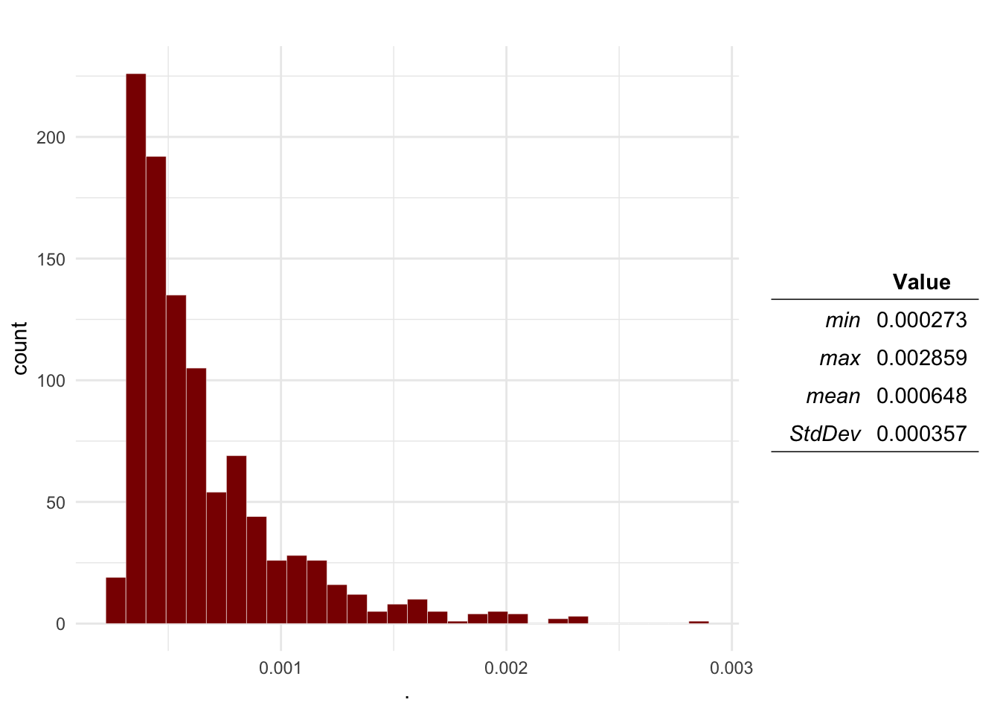

Risk Assessment in R
1 Objectives
In this lab we will be using R, which is an open access software
developed for statistical analysis (but can do some data manipulation,
simulation and modeling). We will be using the package
QuantRRA for rapid risk assessment (still under
development). Make sure you have installed the latest version of R, Rstudio, and QuantRRA. If you don’t
want/can’t install R and Rstudio in your local machine, you can create a
free account of Rstudio cloud and
use a cloud server to run the code. The objectives for this lab are:
- Familiarize with methods to develop risk assessment using R
- Integrate qualitative and quantitative information for the development of RRA
- Develop a system that can be easily updated and re-parametrized
- Use random forest and regression trees to evaluate the sensitivity of the model
- Use the RRA model in multiple regions.
2 Basics
First we have to make sure we have installed a couple of packages to run this lab:
packages <- c('devtools', # Package for installing external dependencies
'sf', # For spatial data manipulation
'sparkline') # For visualization
## Now load or install&load all
package.check <- lapply(
packages,
FUN = function(x) {
if (!require(x, character.only = TRUE)) {
install.packages(x, dependencies = TRUE)
library(x, character.only = TRUE)
}
}
)
devtools::install_github('spablotemporal/QuantRRA', dependencies = T) # RRA toolset# Libraries we will use
library(sf); library(dplyr)
library(QuantRRA)2.1 Sampling probability distributions
By default, R has several functions to sample a distribution and plot the results. For example, if we would like to sample a normal distribution with a mean of 5 and standard deviation of 0.12, we can use the following code:
# sample the distribution and save it to an object
x <- rnorm(n = 100, # Number of observations to sample
mean = 5, # Mean
sd = 0.12) # Standard deviation
# Plot the observations
hist(x)
In this lab we will be using the package QuantRRA, which
is specifically developed for rapid risk assessment in R. The function
SampleDist() support multiple distributions such as:
Normal, binomial, uniform, pert, among others. The function requires two
arguments:
xwhich is a string (text) of the distribution and its parameters.
nthe number of observations we will sample.
n <- 100 # number of observations
d <- 'Normal(5, 0.12)' # Distribution to sample
x <- SampleDist(x = d, n = n) # Function to sample the distribution
# We can use the function plotDist() from the package QuantRRA to get a more familiar output:
plotDist(x, # the values sampled
main = 'Distribution of x') # A title for our plot
2.2 The main function
Now that we covered the basics of QuantRRA, we will
create our first model. The main function RRA() requires
two arguments:
- M, the model file
- n number of simulations.
Lets see an example of a pre-made model file. The following model was based on a risk assessment performed by the OIRSA (Organismo Internacional Regional de Sanidad Agropecuaria) for the introduction of ASF into the countries that are part of OIRSA, you can read more about this report in this link. The model estimates the number of introduction events from imported animal products swill feeding in a given year.
To represent the model we must identify the inputs and the outputs we want to calculate. The following figure was adapted from the report by OIRSA

Lets have a look of how we would represent this in R. This model was adapted and its contained in the package, to access the model file use the following code:
QuantRRA::OIRSA_M[, 1:6]## id label type level distribution formula
## 1 P1 Prevalence In 1 Pert(0.1, 0.54, 0.75) <NA>
## 2 P2 Survival In 1 Pert(0.01, 0.1, 0.6) <NA>
## 3 P3 Detection In 1 Pert(0.1, 0.25, 0.55) <NA>
## 4 P4 Introduction Out 2 <NA> P1*P2*P3
## 5 R1 Swill feeding In 1 Pert(0.1, 0.8, 0.95) <NA>
## 6 R2 Food contamination In 1 Pert(0.1, 0.55, 0.96) <NA>
## 7 R3 Ingestion prob Out 2 <NA> R1*R2
## 8 X Infection Probability Out 3 <NA> P4*R3
## 9 H1 Airport introduction In 1 Pert(0, 32, 160) <NA>
## 10 H2 Seaports intro In 1 Pert(0, 22, 90) <NA>
## 11 Z Total Introductions Out 2 <NA> H1+H2
## 12 P Total risk Out 4 <NA> X*ZThe model file (M) must be a data.frame where each of the rows is a parameter and the columns are the following:
- id, Unique identifier for the parameter. Use short names with no special characters or spaces starting with a letter, i.e. I1, P3, etc…
- label Name of the parameter.
- type If its an input (In) or output (Out) parameter. Input parameters must have a distribution specified, otherwise NA; Output parameters must have a formula specified, NA otherwise
- level Hierarchy level of the parameter, This will determine the order in which the output parameters will be calculated.
- distribution Distribution for the input parameters,
must follow the specification of the
SampleDist()function fromQuantRRA, if the parameter is an output, must be NA.
- formula Formula used to calculate the Out parameters, the formula must include other parameters from lower hierarchy levels. The formula con use any operators such as multiplication (*), sum (+), substraction (-), exponential (^), division(/), etc…
When we use the function RRA() on the model file, we
will calculate the outcome n times based on the distributions
specified:
# Save the model file to an object
M <- QuantRRA::OIRSA_M
# Run the model 5000 times
Mo <- RRA(M = M, nsim = 5000)
# Visualize the results:
plotDist(Mo$P)
The result of this is a table with the distributions sampled for the inputs, and the ones calculated for the outputs. Based on the results, we can estimate the probability that the number of introduction events will be more than 1:
sum(Mo$P > 1) / length(Mo$P)## [1] 0.21442.3 Sensitivity analysis
We can perform sensitivity analysis on the model to identify the most
relevant parameters and explore the parameters sample space, for this we
can use the function RFCART() from the
QuantRRA package. The function uses random forest to
estimate the relative importance of the parameters, and classification
and regression trees to visualize the interactions between the
parameters sampled. The function requires 3 main arguments:
- data: Our results table from the model.
- formula A formula that contains the names of the outcome
analyzed and the parameters.
- tree: we can specify if we want an interactive or static visualization for our tree.
# First we specify the formula:
f <- P ~ P1 + P2 + P3 + R1 + R2 + H1 + H2
# Then we use the function with our results
SA <- RFCART(data = Mo, f = f, tree = 'interactive')
# The results contain 3 objects:
SA$VarianceExp # The variance explained by our parameters## [1] 84.71038SA$RelImport # The relative importance of our parameters
SA$RT # The classification and regression tree3 Case study: Rabies in Mexico
Now we will be using a model to estimating the risk of rabies transmission from dogs to humans trough bite aggression. We will use the data set for the rabies vaccination program in Mexico. This data set contains the estimated dog and human population per state, number of reported dog bites, and the vaccination coverage for the years 2016 to 2020.
3.1 Data preparation
# Load the rabies data set
rb <- QuantRRA::.
# lets have a look at the first observations
head(rb)## year State HumanPop DogPop Bites VaccinationCov
## 1 2016 AGUASCALIENTES 830762 207178 472 0.9470262
## 2 2016 BAJACALIFORNIA 2192229 349926 807 0.9212948
## 3 2016 BAJACALIFORNIASUR 475014 110438 240 0.9053768
## 4 2016 CAMPECHE 591801 77553 491 0.9822960
## 5 2016 COAHUILADEZARAGOZA 1915633 364392 3466 0.9632813
## 6 2016 COLIMA 473790 81469 299 0.9719648We will use the data set to estimate the median, min, and max of the variables, and then use this to describe Pert distributions to use in further analysis.
# We need to format the data
rbt <- rb %>% # The rabies data set
group_by(State) %>% # We will group our observations by state
# Next we will calculate the median, min and max for each of our variables
summarise_at(.vars = c('HumanPop', 'DogPop', 'Bites', 'VaccinationCov'), # These are the variables
.funs = c(m = ~median(., na.rm = T), min = ~min(., na.rm = T), max = ~max(., na.rm = T))) %>% # These are the functions
# Next we will create new columns to specify the distributions we will use for the RRA
mutate(DogPop = paste0('Pert(', DogPop_min, ', ', DogPop_m, ', ', DogPop_max, ')'),
HumanPop = paste0('Pert(', HumanPop_min, ', ', HumanPop_m, ', ', HumanPop_max, ')'),
Bites = paste0('Pert(', Bites_min, ', ', Bites_m, ', ', Bites_max, ')'),
VaccinationCov = paste0('Pert(', VaccinationCov_min, ', ', VaccinationCov_m, ', ', VaccinationCov_max, ')'))
rbt## # A tibble: 32 × 17
## State HumanPop_m DogPop_m Bites_m VaccinationCov_m HumanPop_min DogPop_min
## <chr> <int> <int> <int> <dbl> <int> <int>
## 1 AGUASCA… 872284 229628 359 0.946 830762 207178
## 2 BAJACAL… 2304488 304764 689 0.912 2192229 213802
## 3 BAJACAL… 503531 99893 240 0.921 475014 98523
## 4 CAMPECHE 621328 163240 376 0.985 591801 77553
## 5 CHIAPAS 3201316 344045 1247 0.992 3060969 47769
## 6 CHIHUAH… 2397021 389094 1378 0.959 2310452 213789
## 7 CIUDADD… 6669505 1008103 9370 0.964 6581634 573999
## 8 COAHUIL… 1992735 364392 2330 0.963 1915633 333339
## 9 COLIMA 496085 79303 339 0.988 473790 78264
## 10 DURANGO 1143753 232448 2723 0.955 1104617 193861
## # ℹ 22 more rows
## # ℹ 10 more variables: Bites_min <int>, VaccinationCov_min <dbl>,
## # HumanPop_max <int>, DogPop_max <int>, Bites_max <int>,
## # VaccinationCov_max <dbl>, DogPop <chr>, HumanPop <chr>, Bites <chr>,
## # VaccinationCov <chr>3.2 Planning the model.
Now we will create a model file based on the next scenario tree for the transmission of dog rabies to humans:

We need identify the inputs and outputs, and the relationships between the nodes in our scenario tree. To parametrize our model we will be using the data reported by the vaccination program (such as dog and human population, bite reports, and vaccination coverage) and some theoretical distributions that we can parametrize based on expert opinion or ‘what if?’ scenarios.
The outputs in the model will be calculated based in the inputs as follows:
\[ \begin{aligned} P(Contact) = O_1 &= \frac{I_1}{I_2} \\ P(Bite) = O_2 &= \frac{I_3}{I_1} \\ P(Infected\ dog) = O_3 &= (1 - I_4) \times I5\\ P(Transmission) = O_4 &= O_1 \times O_2 \times O_3 \times I_5\\ \end{aligned} \] We can also calculate the estimated number of transmission events in a given year using the following formula:
\[ E[Transmission\ events] = O_4 \times I_2 \] We will create our model file from scratch by defining each of the columns that needs to be present in order to calculate the outputs. We will be calculating the probability of transmission for one of the states in Mexico (Mexico city). Now complete the formulas described for the outputs to be calculated:
# Get the index for Mexico city:
state <- which(rbt$State == 'CIUDADDEMEXICO')
# Define the model:
M <- data.frame(
# First we will create our IDs
id = c('I1', 'I2', 'O1',
'I3', 'O2',
'I4', 'I5', 'O3',
'I6', 'O4',
'E'),
# Then we define the names for the nodes
label = c('DogPop', 'HumanPop', 'Contact Probability',
'Bites', 'Bite Probability',
'VaccinationCoverage', 'Prevalence', 'Probability of Infected dog',
'Transmission rate', 'Transmission probability',
'Expected transmission events'),
# Type of node
type = c('In', 'In', 'Out',
'In', 'Out',
'In', 'In', 'Out',
'In', 'Out',
'Out'),
# Hierarchy level
level = c(0, 0, 1,
0, 1,
0, 0, 1,
0, 2,
2),
# Distributions for the input nodes
distribution = c(rbt$DogPop[state], rbt$HumanPop[state], NA,
rbt$Bites[state], NA,
rbt$VaccinationCov[state], 'Pert(0.01, 0.05, 0.1)', NA,
'Pert(0.1, 0.3, 0.5)', NA,
NA),
# Formulas for the output nodes
formula = c(NA, NA, 'I1/I2', # O1 Contact
NA, 'Formula for O2', # O2 Bite
NA, NA, 'Formula', # O3 infection
NA, 'Formula', # O4 Transmission
'Formula')) # E Transmission events3.3 Running the model
Now we will run 1000 simulations of the model and plot the distribution of the outputs calculated:
Mo <- RRA(M = M, nsim = 1000)
plotDist(Mo$O1, main = 'Contact probability') # Contact
Question 1 Plot the distributions of the Probability of aggression, a dog being infected with rabies, the dog-human transmission and the expected number of cases.
plotDist(Mo$O2, main = 'Bite probability') # BiteplotDist(Mo$O3, main = 'Infected dog probability') # Infected
plotDist(Mo$O4, main = 'Transmission probability') # Transmission
plotDist(Mo$E, main = 'Expected number of cases') # Expected number of transmission events
Question 2 Based on the results, what would be the probability that there will be more than 1 transmission events?
sum(Mo$E > 1) / length(Mo$E)## [1] 03.4 Sensitivity analysis
Now we will run the sensitivity analysis on the model results for the estimated number of transmission events
SA <- RFCART(data = Mo, f = E ~ I1 + I2 + I3 + I4 + I5 + I6, tree = 'interactive')
SA$VarianceExp## [1] 91.42439SA$RelImport
SA$RTQuestion 3 What can you say about the sensitivity of the model? would you say its a good model?
3.5 Generating a risk map
We can use the function RRA_s() to calculate a risk
model stratified by a variable, in this case we will estimate the
expected transmission events for the rest of the states in Mexico. The
function RRA_s() requires 3 arguments:
- M, the model file
- Tbl, a table where each row represent a strata, and
each column represent the name of strata and the input parameters.
- nsim, number of simulations
# We will create a table to use as input
rbts <- rbt %>%
select(State, I1 = DogPop, I2 = HumanPop, I3 = Bites, I4 =VaccinationCov) %>%
mutate(
I5 = 'Pert(0.01, 0.1, 0.15)', # Prevalence
I6 = 'Pert(0.1, 0.3, 0.5)') # Transmission
# Run the model for all the states
rabRR <- QuantRRA::RRA_s(M = M, Tbl = rbts, nsim = 5000)
# Load the spatial shape file for the region
MxSp <- st_read(system.file("data/MxSp.shp", package = "QuantRRA"), quiet = T)
# Plot the risk map
MxSp %>% # This is our spatial shape file
left_join(rabRR, by = c('Entidad' = 'IDs')) %>% # we use left join to join our model results
ggplot() + # We call ggplot
geom_sf(aes(fill = O4_m)) + # We add a layer representing the polygons colored by the variable E
scale_fill_gradient(low = 'black', high = 'red') + # set the color scale
theme_void() # Theme of the plot
MxSp %>% # This is our spatial shape file
left_join(rabRR, by = c('Entidad' = 'IDs')) %>%
data.frame() %>%
arrange(desc(E_m))## NAME_1 Entidad O1_m O2_m
## 1 México MEXICO 0.26441465 0.0011985137
## 2 Hidalgo HIDALGO 0.37512513 0.0014948589
## 3 Puebla PUEBLA 0.29877014 0.0010421136
## 4 Guanajuato GUANAJUATO 0.25810069 0.0006613687
## 5 Distrito Federal CIUDADDEMEXICO 0.14525630 0.0013013756
## 6 Nuevo León NUEVOLEON 0.14112035 0.0007493001
## 7 Durango DURANGO 0.20709704 0.0023864346
## 8 Sonora SONORA 0.16953545 0.0009817341
## 9 Jalisco JALISCO 0.13600039 0.0006121804
## 10 Tlaxcala TLAXCALA 0.37781069 0.0007723775
## 11 San Luis Potosí SANLUISPOTOSI 0.25737639 0.0013043821
## 12 Tamaulipas TAMAULIPAS 0.14270199 0.0010157131
## 13 Coahuila COAHUILADEZARAGOZA 0.18458235 0.0012099904
## 14 Michoacán MICHOACANDEOCAMPO 0.22762551 0.0007021256
## 15 Chihuahua CHIHUAHUA 0.15348010 0.0005468132
## 16 Querétaro QUERETARO 0.18780394 0.0005543646
## 17 Baja California BAJACALIFORNIA 0.12955502 0.0002875095
## 18 Aguascalientes AGUASCALIENTES 0.25993489 0.0004049415
## 19 Veracruz VERACRUZDEIGNACIODELALLAVE 0.21339281 0.0005570485
## 20 Morelos MORELOS 0.13825136 0.0009202538
## 21 Yucatán YUCATAN 0.17663509 0.0010887102
## 22 Quintana Roo QUINTANAROO 0.12204533 0.0008034433
## 23 Guerrero GUERRERO 0.21216896 0.0008527388
## 24 Baja California Sur BAJACALIFORNIASUR 0.20115836 0.0004699098
## 25 Zacatecas ZACATECAS 0.26699191 0.0003908878
## 26 Sinaloa SINALOA 0.11905292 0.0002358680
## 27 Nayarit NAYARIT 0.06280632 0.0008471006
## 28 Oaxaca OAXACA 0.12667819 0.0003256106
## 29 Campeche CAMPECHE 0.24811490 0.0005945023
## 30 Chiapas CHIAPAS 0.09995748 0.0003798353
## 31 Tabasco TABASCO 0.16124261 0.0001992704
## 32 Colima COLIMA 0.16932832 0.0006803438
## O3_m O4_m E_m O1_q05 O2_q05 O3_q05
## 1 0.0039184764 1.147437e-07 1.290973732 0.25473002 0.0010147519 0.0019265624
## 2 0.0050734802 2.680264e-07 0.516166999 0.34834351 0.0013465154 0.0024438991
## 3 0.0039850586 1.117968e-07 0.450927455 0.24191718 0.0008046787 0.0020187667
## 4 0.0070303574 1.113879e-07 0.427395905 0.25136516 0.0005513846 0.0035679578
## 5 0.0033170325 5.634672e-08 0.375792539 0.11613431 0.0009882441 0.0016633038
## 6 0.0078130924 7.472629e-08 0.270367678 0.10832511 0.0005774413 0.0038641750
## 7 0.0044415819 2.057831e-07 0.235381011 0.18100880 0.0017995743 0.0021772905
## 8 0.0075124887 1.137134e-07 0.222597777 0.13846808 0.0007249083 0.0037615065
## 9 0.0052680295 4.154112e-08 0.219698323 0.12552972 0.0005372996 0.0026110919
## 10 0.0092193969 2.491381e-07 0.213260880 0.35029211 0.0005698081 0.0046583588
## 11 0.0036185918 1.097698e-07 0.197513156 0.17750238 0.0010447318 0.0017139842
## 12 0.0050837725 6.779177e-08 0.157711616 0.13546320 0.0007992349 0.0025528466
## 13 0.0034694446 7.355904e-08 0.146642534 0.17166201 0.0009844328 0.0017605124
## 14 0.0028076975 4.218505e-08 0.125312089 0.20720774 0.0005928830 0.0013867948
## 15 0.0040110863 3.037174e-08 0.072897144 0.12721525 0.0004252589 0.0020530353
## 16 0.0047904572 4.740768e-08 0.067103757 0.17900152 0.0004674184 0.0023849308
## 17 0.0083183294 2.875756e-08 0.066428183 0.10938791 0.0002209491 0.0041372650
## 18 0.0051947204 4.998821e-08 0.043651529 0.24795980 0.0002956860 0.0025424543
## 19 0.0007092832 7.820075e-09 0.043204138 0.16914208 0.0005063650 0.0003517190
## 20 0.0026096817 2.918709e-08 0.038538189 0.08793467 0.0007443662 0.0009389547
## 21 0.0013006215 2.301826e-08 0.033785860 0.15188222 0.0008293862 0.0004775263
## 22 0.0036701502 3.150805e-08 0.033352999 0.10307516 0.0006138713 0.0010439739
## 23 0.0008760324 1.442448e-08 0.031795092 0.17484767 0.0005659427 0.0004304797
## 24 0.0069697040 6.190199e-08 0.031224091 0.19258072 0.0003882575 0.0034351419
## 25 0.0025347945 2.407956e-08 0.024530796 0.25859283 0.0002807783 0.0012472838
## 26 0.0043056679 1.122204e-08 0.022700010 0.11346379 0.0001614828 0.0020546470
## 27 0.0055685956 2.469301e-08 0.019520693 0.03128702 0.0006161008 0.0015809124
## 28 0.0013135519 5.316326e-09 0.013640448 0.10485334 0.0002545713 0.0006411532
## 29 0.0014687398 1.975817e-08 0.012286097 0.19116803 0.0004263805 0.0006321860
## 30 0.0008640544 2.859004e-09 0.009165010 0.05718031 0.0003202488 0.0002949030
## 31 0.0016889103 5.122517e-09 0.008198477 0.14676407 0.0001717758 0.0006746762
## 32 0.0012263720 1.363715e-08 0.006768029 0.15773142 0.0006325498 0.0005844553
## O4_q05 E_q05 O1_q95 O2_q95 O3_q95 O4_q95
## 1 2.816298e-08 0.315483097 0.27275667 0.0013022276 0.006003631 2.459009e-07
## 2 6.434177e-08 0.124302290 0.39731763 0.0016504019 0.007463640 5.514683e-07
## 3 2.956965e-08 0.119603705 0.32867878 0.0011923423 0.005898957 2.416896e-07
## 4 2.939772e-08 0.111857410 0.26470961 0.0007473700 0.010026526 2.296789e-07
## 5 1.402851e-08 0.093399333 0.16526282 0.0014497469 0.004926731 1.222036e-07
## 6 1.839261e-08 0.066819669 0.15681369 0.0009165523 0.011431672 1.615496e-07
## 7 5.010612e-08 0.057644489 0.23911813 0.0030091576 0.006541415 4.432260e-07
## 8 2.852859e-08 0.055608523 0.19098140 0.0011654684 0.011161413 2.471678e-07
## 9 1.069306e-08 0.056853912 0.14836599 0.0006937898 0.008284949 9.027410e-08
## 10 6.297690e-08 0.054133577 0.39530685 0.0009777732 0.013142266 5.270153e-07
## 11 2.661083e-08 0.047729447 0.29023890 0.0015095016 0.006661133 2.717416e-07
## 12 1.703498e-08 0.039684376 0.14774544 0.0011797693 0.007311880 1.419684e-07
## 13 1.904013e-08 0.038058521 0.20002280 0.0015050650 0.005055746 1.540774e-07
## 14 1.073344e-08 0.031675738 0.24384910 0.0008309608 0.004355683 9.151919e-08
## 15 7.964916e-09 0.018951795 0.16699161 0.0006225064 0.005724182 6.309644e-08
## 16 1.186542e-08 0.016835953 0.19761684 0.0006478539 0.007034768 9.658540e-08
## 17 6.987157e-09 0.016009187 0.14582453 0.0003348129 0.011705054 5.966734e-08
## 18 1.184838e-08 0.010323408 0.27041147 0.0004971451 0.007376613 1.051464e-07
## 19 1.977235e-09 0.010951124 0.23855619 0.0005810160 0.001132257 1.694995e-08
## 20 6.026733e-09 0.007956508 0.18580452 0.0010089316 0.005944201 9.200366e-08
## 21 5.085836e-09 0.007479276 0.20515008 0.0013008297 0.002763866 6.591276e-08
## 22 5.962006e-09 0.006301842 0.13310858 0.0009471209 0.010700596 1.186089e-07
## 23 3.520740e-09 0.007746288 0.24084129 0.0010664725 0.001350501 3.221281e-08
## 24 1.575371e-08 0.007904081 0.21154104 0.0005443611 0.010633765 1.319271e-07
## 25 5.792555e-09 0.005893831 0.27341032 0.0004626415 0.003761037 5.228838e-08
## 26 2.698381e-09 0.005459488 0.12527086 0.0003026404 0.007439632 2.659392e-08
## 27 4.112694e-09 0.003261542 0.08834926 0.0010613928 0.016030105 1.037566e-07
## 28 1.251702e-09 0.003217687 0.17715161 0.0004150865 0.002046031 1.211315e-08
## 29 4.322371e-09 0.002679857 0.28103261 0.0007315040 0.002596297 4.778530e-08
## 30 5.752060e-10 0.001841874 0.13285208 0.0004252514 0.001931930 9.023719e-09
## 31 1.196912e-09 0.001900229 0.17001037 0.0002496554 0.003363748 1.355228e-08
## 32 3.404712e-09 0.001680644 0.19406546 0.0007262338 0.002199727 3.211226e-08
## E_q95 geometry
## 1 2.76240958 MULTIPOLYGON (((-98.86538 1...
## 2 1.06218407 MULTIPOLYGON (((-99.86227 2...
## 3 0.98129108 MULTIPOLYGON (((-98.2506 17...
## 4 0.88161133 MULTIPOLYGON (((-102.066 20...
## 5 0.81579043 MULTIPOLYGON (((-98.86538 1...
## 6 0.58125696 MULTIPOLYGON (((-100.1167 2...
## 7 0.50481911 MULTIPOLYGON (((-105.3973 2...
## 8 0.48534705 MULTIPOLYGON (((-112.4992 2...
## 9 0.47794497 MULTIPOLYGON (((-103.4928 1...
## 10 0.45033275 MULTIPOLYGON (((-98.58488 1...
## 11 0.48821466 MULTIPOLYGON (((-101.4762 2...
## 12 0.33085128 MULTIPOLYGON (((-97.7932 22...
## 13 0.30612160 MULTIPOLYGON (((-100.8325 2...
## 14 0.27074920 MULTIPOLYGON (((-103.7473 1...
## 15 0.15102892 MULTIPOLYGON (((-107.1593 2...
## 16 0.13574471 MULTIPOLYGON (((-100.1263 2...
## 17 0.13751124 MULTIPOLYGON (((-113.3227 2...
## 18 0.09154650 MULTIPOLYGON (((-102.7748 2...
## 19 0.09376756 MULTIPOLYGON (((-96.64851 1...
## 20 0.12060836 MULTIPOLYGON (((-99.46484 1...
## 21 0.09664522 MULTIPOLYGON (((-89.41534 1...
## 22 0.12536751 MULTIPOLYGON (((-89.1454 17...
## 23 0.07060628 MULTIPOLYGON (((-102.1378 1...
## 24 0.06615882 MULTIPOLYGON (((-114.1544 2...
## 25 0.05326967 MULTIPOLYGON (((-104.309 22...
## 26 0.05410798 MULTIPOLYGON (((-107.6418 2...
## 27 0.08218612 MULTIPOLYGON (((-105.2965 2...
## 28 0.03097680 MULTIPOLYGON (((-98.55584 1...
## 29 0.02967845 MULTIPOLYGON (((-92.46785 1...
## 30 0.02882413 MULTIPOLYGON (((-94.108 16....
## 31 0.02161028 MULTIPOLYGON (((-93.60941 1...
## 32 0.01596851 MULTIPOLYGON (((-104.6799 1...In this lab we created a Model file from scratch, but there are other
options if you don’t feel comfortable with the user interface of
Rstudio. One option is to create the Model table in excel, save it as a
CSV and then import it into R. Another option is using the RRA
interactive shiny interface that comes with this package (Currently
under development), you can call the interactive app by typing in the R
console: QuantRRA::runQuantRRA(), this will open a new
window with a more user friendly interactive interface for creating and
uploading model files.
4 Reporting the results
To submit your assignment you should include:
- Plots for the distribution outputs including: Probability of bite
aggression, Probability of a Dog being infected, Probability of
Dog-Human rabies transmission, and the expected number of transmissions
in a given year.
- The probability that there will be more than 1 transmission
events?
- Your opinion about the model sensitivity.
This lab has been developed with contributions from: Jose Pablo Gomez-Vazquez
and Beatriz
Martinez-Lopez.
Feel free to use these training materials for your own research and
teaching. When using the materials we would appreciate using the proper
credits. If you would be interested in a training session, please
contact: jpgo@ucdavis.edu